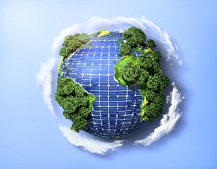

Impacto Ambiental do sistema fotovoltaico
A energia solar não emite gases causadores do efeito estufa, combatendo o aquecimento global. Embora a fabricação precise de energia, ela é compensada com o tempo de uso. O descarte dos painéis um pouco desafiador, mas a reciclagem está trabalhando para reaproveitar componentes e promover uma economia circular.
